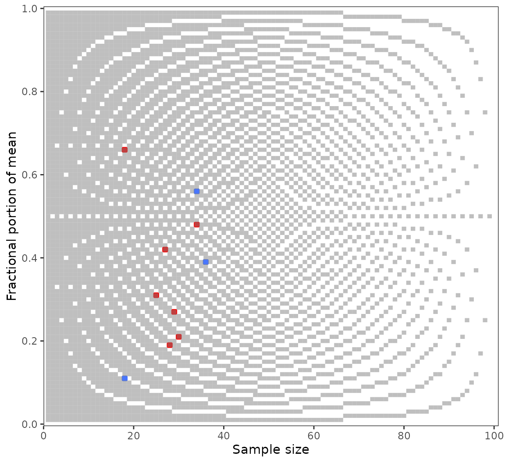

Granularity-related inconsistency of means, or GRIM, is a test for the mathematical consistency of reported means or proportions with the corresponding sample size (Brown and Heathers 2017). It can be applied to summary statistics of discrete numerical distributions. GRIM answers a simple question: Is it possible that a granular distribution has both the reported mean or percentage and the reported sample size?
This vignette covers scrutiny’s implementation of the GRIM test. It has the following sections — to get started, though, you only need the first one:
The basic
grim()function and a specialized mapping function,grim_map().Testing sequences of means or proportions.
The
audit()method for summarizinggrim_map()’s results.The visualization function
grim_plot().Statistical benchmarks, such as granularity and the GRIM ratio.
GRIM testing
Few cases: grim()
To test if a reported mean of 5.27 on a granular scale is GRIM-consistent with a sample size of 43, run this:
grim(x = "5.27", n = 43)
#> 5.27
#> FALSENote that x, the reported mean, needs to be a string. The reason is that strings preserve trailing zeros, which can be crucial for GRIM-testing. Numeric values don’t, and even converting them to strings won’t help. A workaround for larger numbers of such values, restore_zeros(), is discussed in vignette("wrangling").
grim() has some further parameters, but all of them can be used from within grim_map(). The other parameters will be discussed in that context because grim_map() is often the more useful function in practice. Furthermore, although grim() is vectorized, grim_map() is more safe and convenient for testing multiple combinations of means/proportions and sample sizes.
Many cases: grim_map()
If you want to GRIM-test more than a handful of cases, the recommended way is to enter them into a data frame and to run grim_map() on the data frame. Two different ways to do that are discussed in vignette("wrangling"), but here, I will only describe an easily accessible solution for a single table.
Copy summary data from a PDF file and paste them into tibble::tribble(), which is available via scrutiny:
flying_pigs1 <- tribble(
~x,
"8.97",
"2.61",
"7.26",
"3.64",
"9.26",
"10.46",
"7.39"
) %>%
mutate(n = 28)Use RStudio’s multiple cursors to draw quotation marks around all the x values, and to set commas at the end. See vignette("wrangling"), section With copy and paste, if you are not sure how to do that.
Now, simply run grim_map() on that data frame:
grim_map(flying_pigs1)
#> # A tibble: 7 × 5
#> x n items consistency ratio
#> <chr> <int> <int> <lgl> <dbl>
#> 1 8.97 28 1 FALSE 0.72
#> 2 2.61 28 1 TRUE 0.72
#> 3 7.26 28 1 FALSE 0.72
#> 4 3.64 28 1 TRUE 0.72
#> 5 9.26 28 1 FALSE 0.72
#> 6 10.46 28 1 TRUE 0.72
#> 7 7.39 28 1 TRUE 0.72The x and n columns are the same as in the input. By default, the number of items composing the mean is assumed to be 1. The main result, consistency, is the GRIM consistency of the former three columns. On the ratio column, see section The GRIM ratio.
Scale items
If the mean is composed of multiple items, set the items parameter to that number. Below are hypothetical means of a three-items scale. With the single-item default, half of these are wrongly flagged as inconsistent:
jpap_1 <- tribble(
~x,
"5.90",
"5.71",
"3.50",
"3.82",
"4.61",
"5.24",
) %>%
mutate(n = 40)
jpap_1 %>%
grim_map() # default is wrong here!
#> # A tibble: 6 × 5
#> x n items consistency ratio
#> <chr> <int> <int> <lgl> <dbl>
#> 1 5.90 40 1 TRUE 0.6
#> 2 5.71 40 1 FALSE 0.6
#> 3 3.50 40 1 TRUE 0.6
#> 4 3.82 40 1 TRUE 0.6
#> 5 4.61 40 1 FALSE 0.6
#> 6 5.24 40 1 FALSE 0.6Yet, all of them are consistent if the correct number of items is stated:
jpap_1 %>%
grim_map(items = 3)
#> # A tibble: 6 × 5
#> x n items consistency ratio
#> <chr> <int> <int> <lgl> <dbl>
#> 1 5.90 40 3 TRUE -0.2
#> 2 5.71 40 3 TRUE -0.2
#> 3 3.50 40 3 TRUE -0.2
#> 4 3.82 40 3 TRUE -0.2
#> 5 4.61 40 3 TRUE -0.2
#> 6 5.24 40 3 TRUE -0.2It is also possible to include an items column in the data frame instead:
jpap_2 <- tribble(
~x, ~items,
"6.92", 1,
"3.48", 1,
"1.59", 2,
"2.61", 2,
"4.04", 3,
"4.50", 3,
) %>%
mutate(n = 30)
jpap_2 %>%
grim_map()
#> # A tibble: 6 × 5
#> x n items consistency ratio
#> <chr> <int> <dbl> <lgl> <dbl>
#> 1 6.92 30 1 FALSE 0.7
#> 2 3.48 30 1 FALSE 0.7
#> 3 1.59 30 2 FALSE 0.4
#> 4 2.61 30 2 FALSE 0.4
#> 5 4.04 30 3 TRUE 0.1
#> 6 4.50 30 3 TRUE 0.1Percentage conversion
An underappreciated strength of GRIM is testing percentages. Since these are actually decimal numbers inflated by a factor of 100, percentages come with two “free” decimal places. However, percentages are often reported with decimal places beyond those two, which increases the probability of GRIM-inconsistencies unless true values were correctly reported.
Both grim() and grim_map() have a percent parameter which, if set to TRUE, divides the x values by 100 and increases the decimal count by two, so that percentages can be tested just like means:
jpap_3 <- tribble(
~x, ~n,
"32.5", 438,
"35.6", 455,
"21.7", 501,
"39.3", 516,
)
jpap_3 %>%
grim_map(percent = TRUE)
#> ℹ `x` converted from percentage
#> # A tibble: 4 × 5
#> x n items consistency ratio
#> <chr> <int> <int> <lgl> <dbl>
#> 1 0.325 438 1 FALSE 0.562
#> 2 0.356 455 1 TRUE 0.545
#> 3 0.217 501 1 FALSE 0.499
#> 4 0.393 516 1 TRUE 0.484Reconstructed values
Set show_rec to TRUE if you want the values that were reconstructed during GRIM-testing to be displayed in the output. They will be columns prefixed with rec_:
pigs1 %>%
grim_map(show_rec = TRUE)
#> # A tibble: 12 × 12
#> x n items consistency rec_sum rec_x_upper rec_x_lower
#> <chr> <int> <int> <lgl> <dbl> <dbl> <dbl>
#> 1 7.22 32 1 TRUE 231. 7.25 7.22
#> 2 4.74 25 1 FALSE 118. 4.76 4.72
#> 3 5.23 29 1 FALSE 152. 5.24 5.21
#> 4 2.57 24 1 FALSE 61.7 2.58 2.54
#> 5 6.77 27 1 FALSE 183. 6.78 6.74
#> 6 2.68 28 1 TRUE 75.0 2.71 2.68
#> 7 7.01 29 1 FALSE 203. 7.03 7
#> 8 7.38 26 1 TRUE 192. 7.38 7.35
#> 9 3.14 27 1 FALSE 84.8 3.15 3.11
#> 10 6.89 31 1 FALSE 214. 6.90 6.87
#> 11 5.00 25 1 TRUE 125 5 5
#> 12 0.24 28 1 FALSE 6.72 0.25 0.214
#> # … with 5 more variables: rec_x_upper_rounded_up <dbl>,
#> # rec_x_upper_rounded_down <dbl>, rec_x_lower_rounded_up <dbl>,
#> # rec_x_lower_rounded_down <dbl>, ratio <dbl>The additional columns are —
rec_sum: the sum total from which the mean or proportion was ostensibly derived.rec_x_upper: the upper reconstructedxvalue.rec_x_lower: the lower reconstructedxvalue.rec_x_upper_rounded_up: therec_x_uppervalue rounded up.rec_x_upper_rounded_down: therec_x_uppervalue rounded down.rec_x_lower_rounded_up: therec_x_lowervalue rounded up.rec_x_lower_rounded_down: therec_x_lowervalue rounded down.
The last four columns depend on rounding. Here, they follow the default "up_or_down", leading to two columns for each of rec_x_upper and rec_x_lower. With a singular rounding procedure, such as "up", there would only be one column each, and thus, two in total. The difference between these numbers is not greatly important, however, because rounding up and down mostly delivers the same results.
Internally, GRIM-consistency is determined by whether or not a stated x value is near-identical to either rec_x_upper_rounded or rec_x_lower_rounded. This algorithm follows the charitable and conservative protocol outlined by Brown and Heathers (2017).
Rounding
The scrutiny package provides infrastructure for reconstructing rounded numbers. All of that can be commanded from within grim() and grim_map(). Several parameters allow for stating the precise way in which the original numbers have supposedly been rounded.
First and foremost is rounding. It takes a string with the rounding procedure’s name, which leads to the number being rounded in either of these ways:
- Rounded
"up"or"down"from 5. Note that SAS, SPSS, Stata, Matlab, and Excel round"up"from 5, whereas Python rounds"down"from 5. - Rounded to
"even"using base R’s ownround(). - Rounded
"up_from"or"down_from"some number, which then needs to be specified via thethresholdparameter. - Given a
"ceiling"or"floor"at the respective decimal place. - Rounded towards zero with
"trunc"or away from zero with"anti_trunc".
The default, "up_or_down", allows for numbers rounded either "up" or "down" from 5 when GRIM-testing; and likewise for "up_from_or_down_from" and "ceiling_or_floor". For more about these procedures, see documentation for round(), round_up(), and round_ceiling(). These include all of the above ways of rounding.
Points 3 to 5 above list some quite obscure options that were only included to cover a wide spectrum of possible rounding procedures. The same is true for the threshold and symmetric parameters, so these aren’t discussed here any further. Learn more about scrutiny’s infrastructure for rounding at vignette("rounding").
By default, grim() and grim_map() accept values rounded either up or down from 5. If you have reason to impose stricter assumptions on the way x was rounded, specify rounding accordingly:
jpap_4 <- tibble::tribble(
~x, ~n,
"2.02", 80,
"2.03", 80,
"2.04", 80,
"2.05", 80,
)
jpap_4 %>%
grim_map(rounding = "up")
#> # A tibble: 4 × 5
#> x n items consistency ratio
#> <chr> <int> <int> <lgl> <dbl>
#> 1 2.02 80 1 FALSE 0.2
#> 2 2.03 80 1 TRUE 0.2
#> 3 2.04 80 1 TRUE 0.2
#> 4 2.05 80 1 TRUE 0.2
jpap_4 %>%
grim_map(rounding = "down")
#> # A tibble: 4 × 5
#> x n items consistency ratio
#> <chr> <int> <int> <lgl> <dbl>
#> 1 2.02 80 1 TRUE 0.2
#> 2 2.03 80 1 FALSE 0.2
#> 3 2.04 80 1 TRUE 0.2
#> 4 2.05 80 1 TRUE 0.2Rounding up and down leads to precisely opposite results for the first two cases, although it agrees on the latter two. Even this example is cherry-picked: Sample sizes of 80 are highly unusual because, for most other n values, those two rounding procedures agree in the overwhelming majority of cases. See section Visualizing results with grim_plot() on this issue.
It might still be important to account for the different ways in which numbers can be rounded, if only to demonstrate that some given results are robust to those variable decisions. To err on the side of caution, the default for rounding is the permissive "up_or_down".
Testing numeric sequences
Analysts might be interested in a mean or percentage value’s numeric neighborhood. Suppose you found a reported mean of 5.30 to be GRIM-inconsistent with a sample size of 32. You might hypothesize that it was swapped with the nearby correct value.
There are two ways to approach this: (1) testing sequence vectors with seq_distance() and grim(), or (2) testing sequence data frames with seq_distance_df() and grim_map(). I think the second way is more useful, but see for yourself.
With seq_distance() and grim()
Create a sequence starting from 5.30 with seq_distance() and pipe the result into grim(), where you specify n as 32. Although the starting point is allowed to be numeric, we need to enter 5.30 as a string to preserve the trailing zero:
seq_distance(from = "5.30") %>%
grim(n = 32)
#> 5.30 5.31 5.32 5.33 5.34 5.35 5.36 5.37 5.38 5.39
#> FALSE TRUE FALSE FALSE TRUE FALSE FALSE TRUE TRUE FALSEWith seq_distance_df() and grim_map()
First, use seq_distance_df() to create a data frame with a sequence column starting from 5.30, adding an n column that’s constant at 32:
seq_distance_df(.from = "5.30", n = 32)
#> # A tibble: 10 × 2
#> x n
#> <chr> <dbl>
#> 1 5.30 32
#> 2 5.31 32
#> 3 5.32 32
#> 4 5.33 32
#> 5 5.34 32
#> 6 5.35 32
#> 7 5.36 32
#> 8 5.37 32
#> 9 5.38 32
#> 10 5.39 32This data frame can readily be piped into grim_map(), so we get a neat output table without much preparation:
seq_distance_df(.from = "5.30", n = 32) %>%
grim_map()
#> # A tibble: 10 × 5
#> x n items consistency ratio
#> <chr> <int> <int> <lgl> <dbl>
#> 1 5.30 32 1 FALSE 0.68
#> 2 5.31 32 1 TRUE 0.68
#> 3 5.32 32 1 FALSE 0.68
#> 4 5.33 32 1 FALSE 0.68
#> 5 5.34 32 1 TRUE 0.68
#> 6 5.35 32 1 FALSE 0.68
#> 7 5.36 32 1 FALSE 0.68
#> 8 5.37 32 1 TRUE 0.68
#> 9 5.38 32 1 TRUE 0.68
#> 10 5.39 32 1 FALSE 0.68These results, in turn, can be analyzed with seq_test_ranking():
seq_distance_df(.from = "5.30", n = 32) %>%
grim_map() %>%
seq_test_ranking()
#>
#> Explanation:
#> ℹ There are 4 consistent value sets, starting with row number 2 in the data
#> frame created by `grim_map()`.
#> ℹ All other value sets are inconsistent.
#> ℹ The consistent sets lag the inconsistent ones by numbers of places from 1 to
#> 3 in the `grim_map()` data frame.
#> # A tibble: 6 × 3
#> consistent inconsistent lead_lag
#> <int> <int> <int>
#> 1 2 1 -1
#> 2 5 3 -2
#> 3 8 4 -4
#> 4 9 6 -3
#> 5 NA 7 NA
#> 6 NA 10 NARead more about scrutiny’s four seq_* functions at vignette("infrastructure"); two were left out here.
Summarizing results with audit()
Following up on a call to grim_map(), the generic function audit() summarizes GRIM test results:
flying_pigs1 %>%
grim_map() %>%
audit()
#> # A tibble: 1 × 7
#> incons_cases all_cases incons_rate mean_grim_ratio incons_to_ratio
#> <dbl> <dbl> <dbl> <dbl> <dbl>
#> 1 3 7 0.429 0.72 0.595
#> # … with 2 more variables: testable_cases <dbl>, testable_rate <dbl>These columns are —
incons_cases: number of GRIM-inconsistent value sets.all_cases: total number of value sets.incons_rate: proportion of GRIM-inconsistent value sets.mean_ratio: average of GRIM ratios.incons_base_ratio: ratio ofincons_ratetomean_ratio.testable_cases: number of GRIM-testable value sets (i.e., those with a positive ratio).testable_rate: proportion of GRIM-testable value sets.
Visualizing results with grim_plot()
There is a specialized visualization function for GRIM test results, grim_plot():
jpap_5 <- tribble(
~x, ~n,
"7.19", 28,
"4.56", 34,
"0.42", 27,
"1.31", 25,
"3.48", 34,
"4.27", 29,
"6.21", 30,
"3.11", 18,
"5.39", 36,
"5.66", 18,
)
jpap_5 %>%
grim_map() %>%
grim_plot()
grim_plot() can only be called on grim_map()’s output. It will fail otherwise:
mtcars %>%
grim_plot()
#> Error: `data` is not `grim_map()` output
#> ✖ `grim_plot()` needs GRIM test results.
#> ℹ The only exception is an "empty" plot that shows the background raster but no
#> empirical test results. Create such a plot by setting `show_data` to `FALSE`.The sheer optics of this plot will probably not fit everyone’s taste. However, it is strictly based on the laws governing GRIM. The background raster shows all consistent (light) and inconsistent (dark) value pairs for two decimal places.
Empirical values are shown in blue if consistent and red if inconsistent. Color settings and other ggplot2-typical options are available via arguments. Read about them at grim_plot()’s documentation.
You might notice the light vertical lines at \(N = 40\) and \(N = 80\): Few values are flagged as inconsistent here. This reflects grim_map()’s charitable default of accepting values rounded either up or down from 5. If a different rounding specification is chosen in the grim_map() call, the plot raster will adjust automatically:

All rounding values other than up_from, down_from, and up_from_or_down_from are supported.
Speed is not much of a concern here because all the rasters are based on data already stored within the package (in R/sysdata.rda), so they don’t need to be generated on the spot every time the function is called. See R/data-gen.R for the way they were generated.
GRIM statistics
The GRIM ratio
Formula
The ratio column in a tibble returned by grim_map() is the “GRIM ratio”, i.e.:
\[ \frac{10^D - NL}{10^D} \]
where \(D\) is the number of decimal places in x (the mean or proportion), \(N\) is the sample size, and \(L\) is the number of scale items. Because \(N, L \geq 1\), the GRIM ratio ranges from \(-\infty\) to \(1 - \frac{1}{10^D}\), asymptotically approaching 1. Its upper bound will be 0.9 if \(D = 1\) and 0.99 if \(D = 2\), etc.
Functions
grim_ratio() takes the arguments x, n, items, and percent as in grim() and grim_map():
grim_ratio(x = 1.42, n = 72)
#> [1] 0.28
grim_ratio(x = 5.93, n = 80, items = 3)
#> [1] -1.4
grim_ratio(x = "84.20", n = 40, percent = TRUE) # Enter `x` as string to preserve trailing zero
#> [1] 0.996In addition, grim_total() takes the same arguments but returns only the numerator of the above formula:
grim_total(x = 1.42, n = 72)
#> [1] 28
grim_total(x = 5.93, n = 80, items = 3)
#> [1] -140
grim_total(x = "84.20", n = 40, percent = TRUE) # Enter `x` as string to preserve trailing zero
#> [1] 9960If grim_map()’s prob argument is set to TRUE, it adds a prob column that shows the probability of GRIM inconsistency. prob is derived from left-censoring the ratio column at 0, so it is equal to ratio if and only if \(0 \leq ratio\). If \(ratio < 0\), then \(prob = 0\). (The GRIM ratio cannot be 1 or greater.)
Interpretation
If the GRIM ratio is non-negative, it can be interpreted as the proportion of inconsistent value sets corresponding to a given set of parameters. This is also the probability that a randomly chosen mean is GRIM-inconsistent. If the ratio is negative, the probability is 0.
Similarly, if the grim_total() value is non-negative, it can be interpreted as the total number of GRIM inconsistencies corresponding to a given set of parameters. If it is negative, that total is 0.
Origins
Although the term “GRIM ratio” is new, the formula is arguably implicit in Brown and Heathers’ (2017) paper on GRIM. The numerator is a transformation of the formula presented on p. 364, and the authors discuss a common special case of the ratio (interpreted as a proportion) on p. 367:
With reporting to two decimal places, for a sample size \(N < 100\) [and a single item], a random mean value will be consistent in approximately \(N\)% of cases.
Assuming \(N = 70\) and inserting all of these values into the above formula returns
\[ \frac{10^2-70×1}{10^2} = 0.3 \]
so that a random mean will be inconsistent in about 30% of cases and, conversely, consistent in about 70%.
Here is the same in code (assuming an arbitrary mean with two decimal places):
grim_ratio(x = 0.99, n = 70)
#> [1] 0.3Thus, all I did regarding the GRIM ratio was to make the general formula explicit and give it a name. Researchers may judge for themselves how useful it is for further analyses.
Granularity and scale items
A distribution’s granularity is the minimal amount by which two means or proportions of a non-continuous distribution can differ. It is derived from the sample size and the number of scale items. The number of items, in turn, naturally follows from the distribution’s sample size and granularity.
Formulas
The granularity (\(G\)) formula is
\[ G = \frac{1}{NL} \]
where \(N\) is the sample size and \(L\) is the number of items.
The scale items formula is the converse:
\[ L = \frac{1}{NG} \]
Functions
Suppose you have an ordinal distribution with 80 observations and five items. To get its granularity, run this:
grim_granularity(n = 80, items = 4)
#> [1] 0.003125Now, imagine a distribution with 50 observations and a granularity of 0.01. To get the number of its items (actual or effective), use this code:
grim_items(n = 50, gran = 0.01)
#> [1] 2As the number of items itself has a granularity of 1, a call to grim_items() that doesn’t return whole numbers indicates a problem in earlier computations. A warning to that effect will be displayed:
grim_items(n = c(50, 65, 93), gran = 0.02)
#> Warning: 2 item counts aren't whole numbers
#> → This concerns 0.7692308 and 0.5376344.
#> ! Item counts have a granularity of 1, so they should be whole numbers. Are you
#> sure about the `n` and `gran` values?
#> [1] 1.0000000 0.7692308 0.5376344References
Brown, Nicholas J. L., and James A. J. Heathers. 2017. “The Grim Test: A Simple Technique Detects Numerous Anomalies in the Reporting of Results in Psychology.” Social Psychological and Personality Science 8 (4): 363–69. https://doi.org/10.1177/1948550616673876.